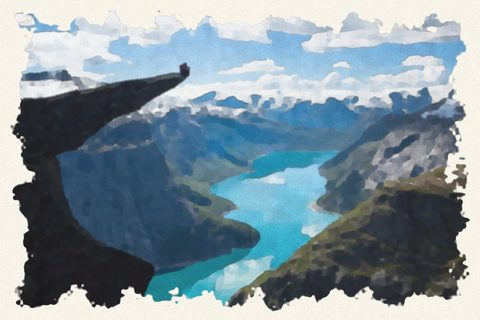
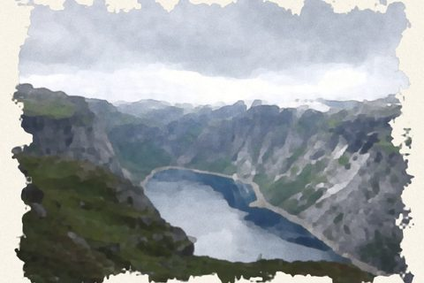
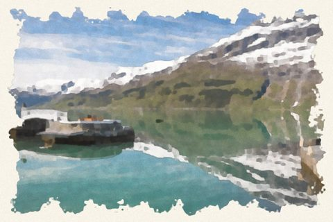

Getting to the start
Step-by-step directions to P1, P2 and P3, prices, booking, the road toll, shuttle buses and the mistakes people make.
Plan your day
Choose your start, pace and time on top. The planner uses the real climbs on the trail and warns you about sunset, the last bus and turnaround time.
Live on the trail
Time, distance, metres climbed and steps, your position on the topo map and elevation profile, and new estimates from your real pace.
Safety first
Today's season, road and weather status, emergency shelters, an SOS page with your position, and clear advice on when to turn back.
Stories and places
69 places and 26 stories from Hardanger: dams and waterfalls, monks and fruit, the industry of Odda, and the trolls.
Hardanger Passport
Collect stamps at the real places, rise from Coming Adventurer to Mountain King, and find the way with a map and camera navigation.
Hand-painted Hardanger



Also inside
- About trolls: where they come from, the kinds of trolls in the old tales, and how to defeat one.
- Troll Hunter: a training game where your passport rank makes you stronger.
- The Hardangerfjord: facts, history and a timeline.
- Weather from MET Norway, a happenings calendar, fun facts and your own hike log with GPX export.
Booking links
Important
Trolltunga is a long and demanding mountain hike. The app gives general guidance and does not replace your own judgement, the official information at trolltunga.com or the advice of the mountain rangers. There are no railings at the edge: keep well back. In an emergency, call 112 or 113.